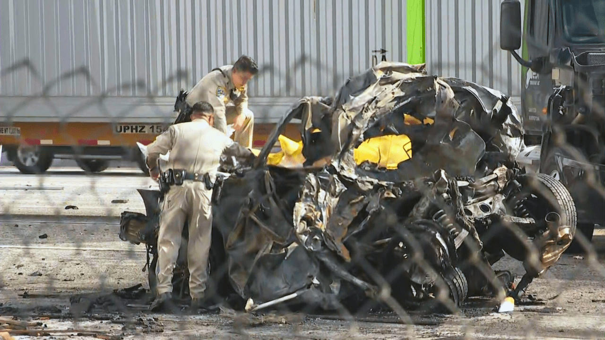
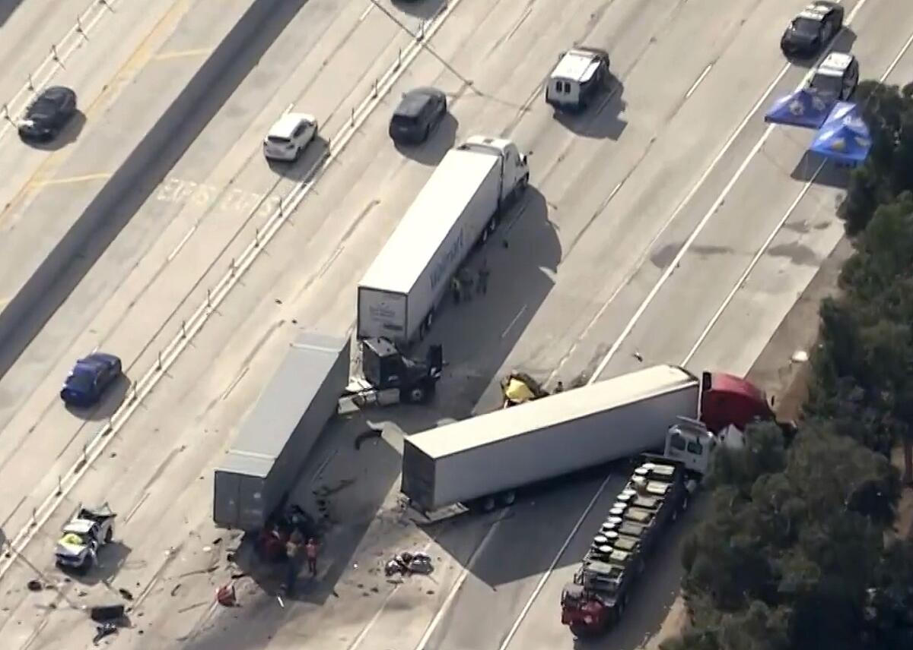

Verifiable Receipts • Public Safety Ledger
Jashanpreet Singh appears in court. Photo from public records.
On a ordinary afternoon in October 2025, westbound I-10 traffic near Ontario slowed. A Freightliner semi driven by Jashanpreet Singh did not. The result was an eight-vehicle pileup that claimed three lives and altered many more.

Emergency responders at the burned wreckage. The human cost of gross negligence.
Singh, 21, entered the United States illegally in 2022. He obtained and had upgraded a California CDL despite federal restrictions on non-citizens and asylum seekers. Initial DUI suspicions were dropped after negative toxicology, but prosecutors secured a guilty plea on three counts of vehicular manslaughter with gross negligence. Sentence: 4 years, 8 months. An ICE detainer awaits.

Aerial view of the multi-rig crash scene on I-10 Ontario.
Clarence Nelson, longtime assistant basketball coach at Pomona High, and his wife Lisa Nelson were killed. Jaime Flores Garcia, 54, of Upland also perished. These were not statistics—they were coaches, spouses, community anchors.
Clarence and Lisa Nelson. Lives of service cut short.
This tragedy fits a pattern visible from the Tower District: policies that prioritize entry and leniency over rigorous verification and enforcement impose real costs on citizens. Licensing failures, release decisions, and light sentencing send one message to working families—your safety is secondary.
"This is a tragedy that could have been prevented."
Community safety requires upstream accountability. Verifiable status. Enforced rules. Receipts that match reality. Anything less is negligence at scale.